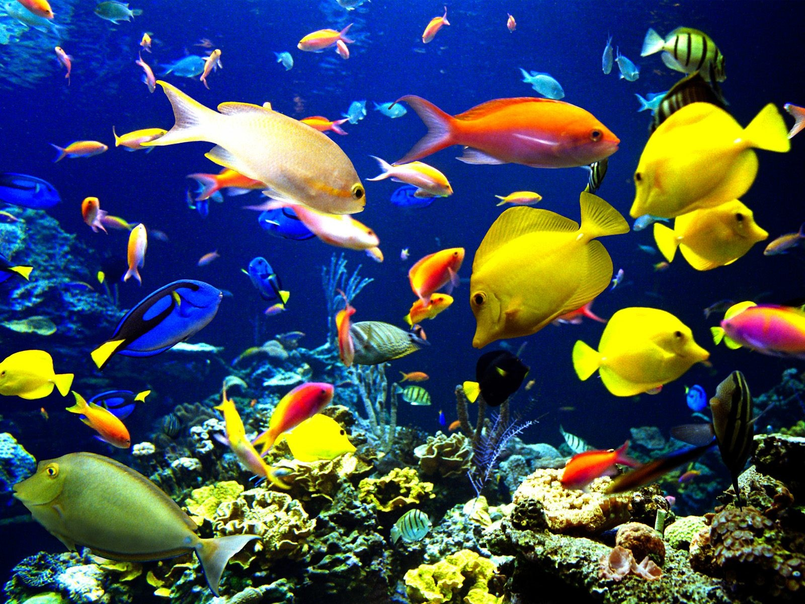
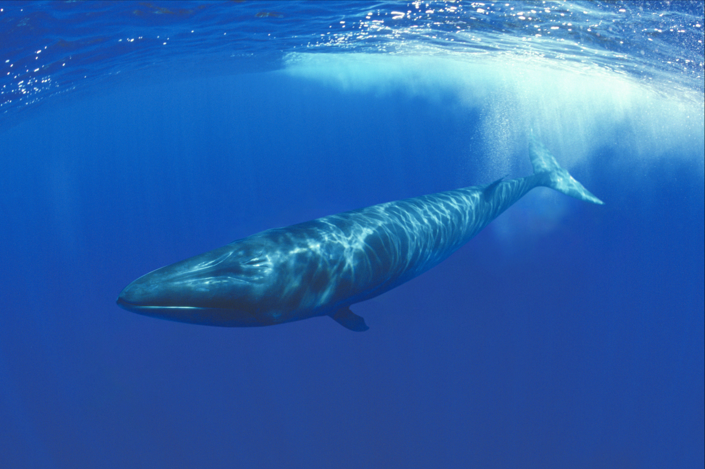
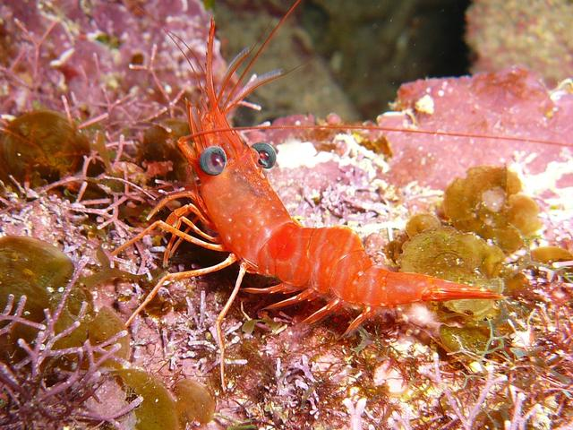

Tropical Oceans
Animal Life
Introduction
Many
tropical ocean animals are fish. However, there are many other types of marine organisms, such as zooplankton or the green sea turtle. Not all organisms that live in the ocean are fish; there are whales, manatees, and even birds. Some carnivores that live in this biome are hammerhead sharks, stonefish, brown boobys, and barracuda. On the other hand, some herbivores are dugongs, green turtle, marine iguanas, and manatees. As you can see, there is a diverse quality of life among the tropical ocean, ranging from flying birds of the sky to the ocean surface stonefish.

Adaptation
Whales,
for example, have adapted to this environment well. Some marine mammals, such as whales, migrate over large distances and may spend time in a combination of arctic, tropical and temperate waters. To cope with these temperature changes, they are endothermic or ‘warm blooded’. Adding on, starfish have adapted to this environment as well. Starfish are unable to move quickly and are vulnerable to predators. However, they have developed defenses against these predators which are chemical defenses. Lastly, stonefish are able to camouflage themselves on the ocean floor with their colored skin and rocky bodies. Many unaware prey swim right into their trap and do not see the awaiting stonefish.

Decomposers in the Environment
Decomposer
are the organisms that break down the final remains of living things. Bacteria and fungi play an important role in freeing the last of the minerals and nutrients from organics and recycling them back into the food web.
Hagfish, worms and other crap that floats in the sea are the decomposers of the ocean biome. Shrimp are decomposers too because like crabs, they take ocean waste, eat it and clean it up.

List of Animals
-
Blue Marlin (Carnivore)
-
Clown Anemonefish (Omnivores)
-
Great Barracuda (Carnivores)
-
Green Turtle (Herbivore)